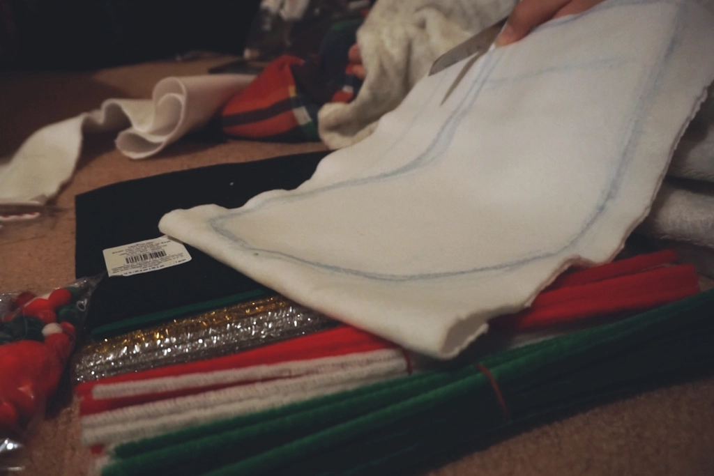
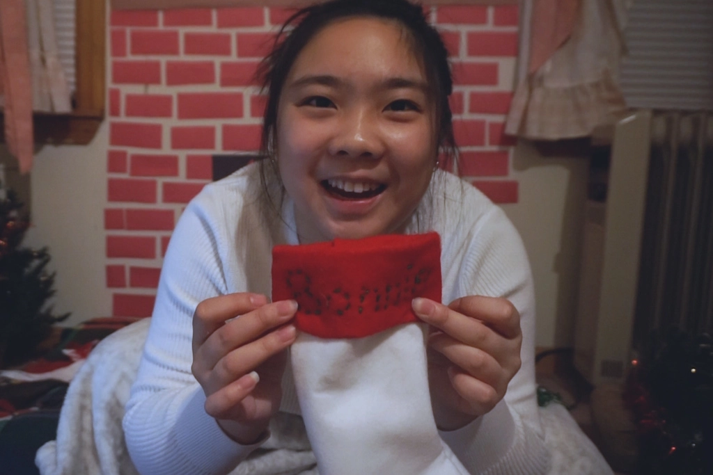
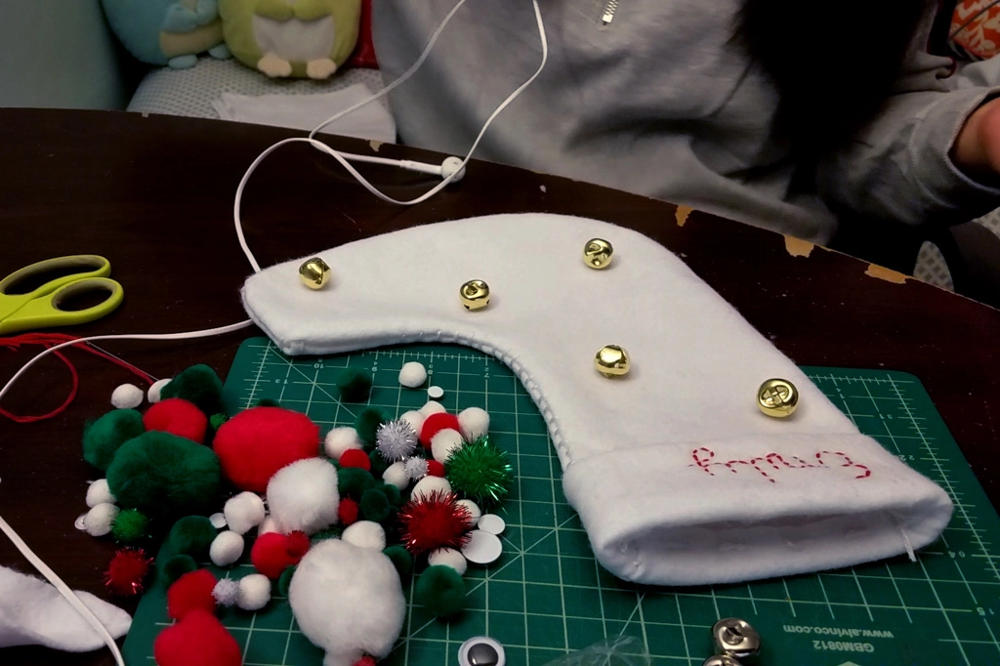
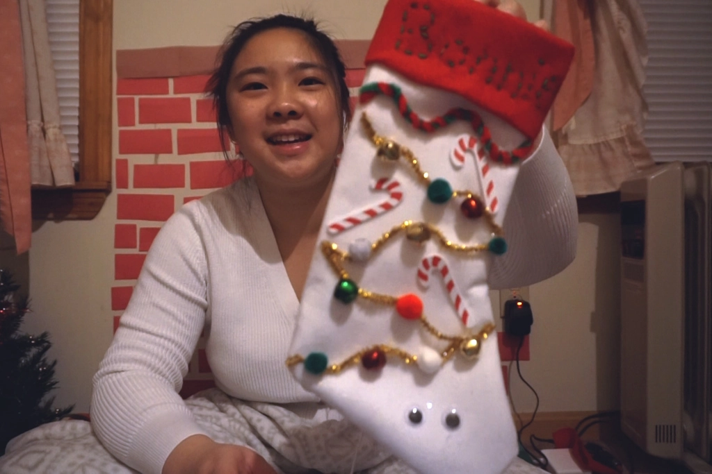
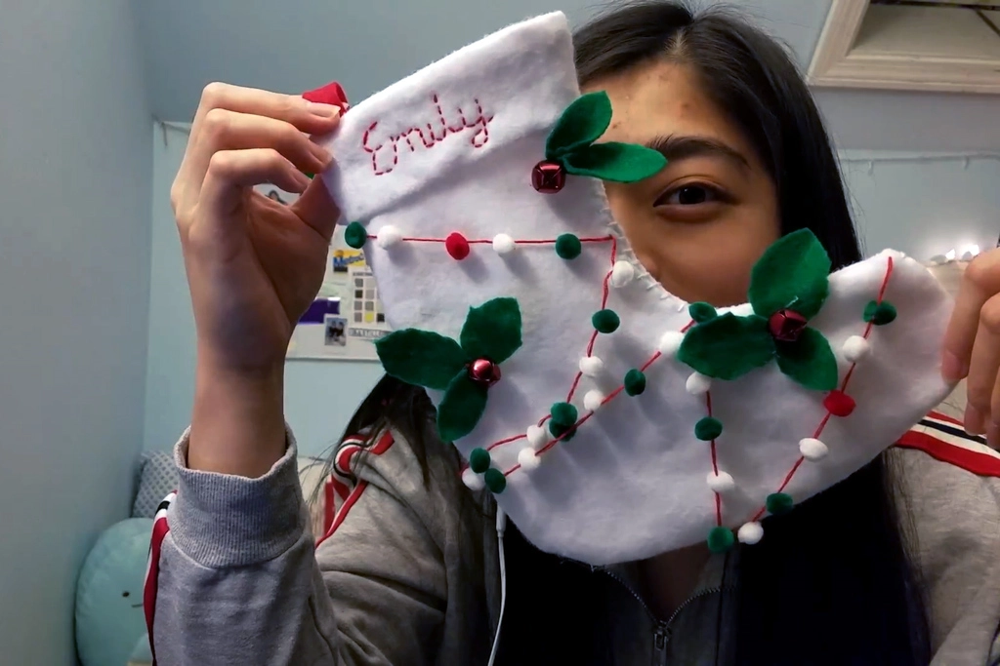

7 Days of Christmas - DIY Stockings
Dec 19 - Written by Bonnie and Emily
Welcome to our first Seven Days of Christmas video-- DIY Stockings!! After decorating our rooms full of holiday decor, we realized we were missing an important item -- stockings!
Bonnie’s fireplace was looking a little too empty without anything hanging from it so we had to make our own personally made stockings to stuff full of little gifts.
Our stockings were made entirely from scratch with a few easily accessible materials from your local craft store including felt, embroidery thread, jingle bells (our favorite), pompoms, and googly eyes! And again, we went into this DIY with no plans whatsoever but it's alright because you get to experience that journey with us and learn how you can do it better. Plus, they still turned out really cute even with all the mishaps!
Who would’ve known that just creating the base of the stocking would take so long. There were many mishaps and mistakes along the way but we managed to recover and turn those errors into happy accidents. Not to mention Bonnie unknowingly sewed her stocking shut and didn’t notice until she went to flip her stocking inside out. But the best part about sewing your own stocking from scratch is full creative freedom over your stocking shape and colors. To add a more personal touch to our stockings we sewed our names at the top in two very different styles.
With all the materials laid out in front of her, Emily picked out her favorite decoration -- Jingle Bells and pompoms to make her cute little festive holly themed stocking decked out with some mini pompoms and felt. Bonnie on the other hand, too in love with the googly eyes, decided to make STEVE, at least that's what she's calling her stocking. Her plan consisted of slapping on a bunch of gold pipe cleaners that reminded her of tinsel and some cute candy cane stickers to match her red and white stocking base. Regardless of the method, this DIY session truly made us realize that hot glue is every DIY crafter's best friend and we can’t live without it.

Bonnie's Stocking

Emily's Stocking